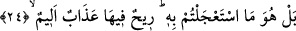
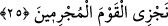

24. Nihayet onu, vâdilerine doğru yayılan bir bulut şeklinde görünce: Bu bize
yağmur yağdıracak yaygın bir buluttur, dediler. Hayır! O, sizin acele gelmesini
istediğiniz şeydir. İçinde acı azap bulunan bir rüzgârdır!
“Nihâyet” onlara vaad edilen azap geldi ve onlar “azâbın (ufukta)” yahut göğün
sathında “geniş bir bulut halinde vâdilerine doğru geldiğini görünce,” gâyet sevinçli
ve mutlu bir şekilde: “Bu, bize yağmur yağdıracak bir buluttur,” bize yağmur getiriyor
“dediler. Hayır,” durum hiç de öyle değil. “O sizin acele gelmesini istediğiniz şey,
içinde acı azâb bulunan bir rüzgârdır.”
“Vâdilerine doğru geldiğini görünce.” Buradaki izafet, izâfet-i lafziyyedir. Bunun
için nekreden sıfat olmuştur.
“Bu, bize yağmur yağdıracak bir buluttur.” Rivâyet edildiğine göre “muğis” denilen
vâdîden siyah bir bulut çıkıp gelmekteydi. Uzun zamandır yağmur yağmıyordu.
“O sizin acele gelmesini istediğiniz şey, içinde acı azâb bulunan bir rüzgârdır.” Bu
yağmur getiren bulut değildir, aksine acele gelmesini arzu ettiğiniz şeydir (azap
bulutudur).
25. O (rüzgâr), Rabbinin emriyle her şeyi yıkar, mahveder. Nitekim (o kasırga
gelince) onların evlerinden başka bir şey görülmez oldu. İşte biz suç işleyen
toplumu böyle cezalandırırız.
O rüzgâr, “Rabbinin emriyle”, üzerine uğradığı “her şeyi”, canları ve malları “yıkar,
mahveder.” Çünkü hareket ve sükûn, ancak Allah’ın dilemesiyledir. “Derken onlar”
azaptan dolayı “o hale geldiler ki konutlarından başka bir şey görülmez oldu.” O
fırtınalı rüzgâr onları yakalayıp helâk etti. “İşte biz, suç işleyen toplumu böyle” feci
şekilde “cezâlandırırız” ve kökünü kuruturuz.
Allah Teâlâ her şeyin ve herkesin Rabbi olmakla beraber, “rüzgârın Rabbi” diye Rab
kelimesinin rüzgâra muzâf kılınması, muzâfun ileyh olan rüzgârın ve bu fırtınanın şânını
yüceltmek içindir. Ayrıca rüzgârın da hareketinde emir kulu olup kendisinin Allah’ın
ordularının büyüklerinden olduğuna da işâret edilmektedir. Yâni bu durum bir takım
yıldızların burç ve boynuzların etkilerinden değil, bilakis Allah Teâlâ’nın azap etmek
için kudretiyle yaratıp meydana getirdiği bir durumdur. Denildi ki: Allah Teâlâ rüzgârın